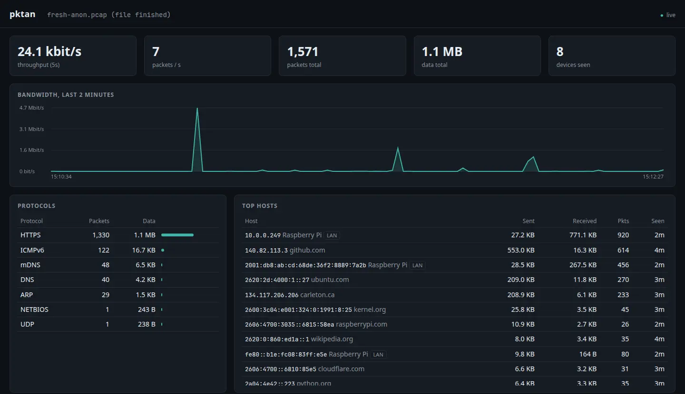
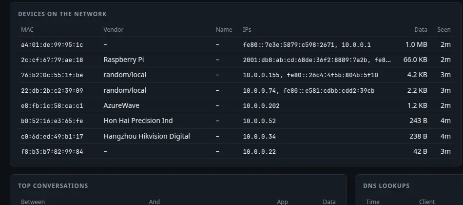
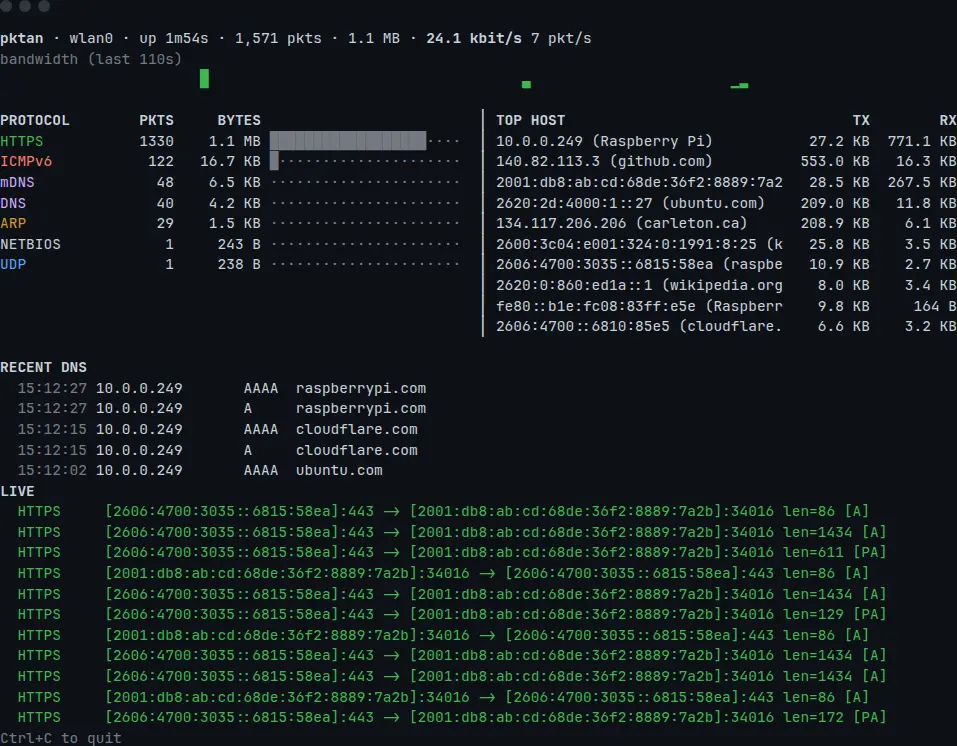
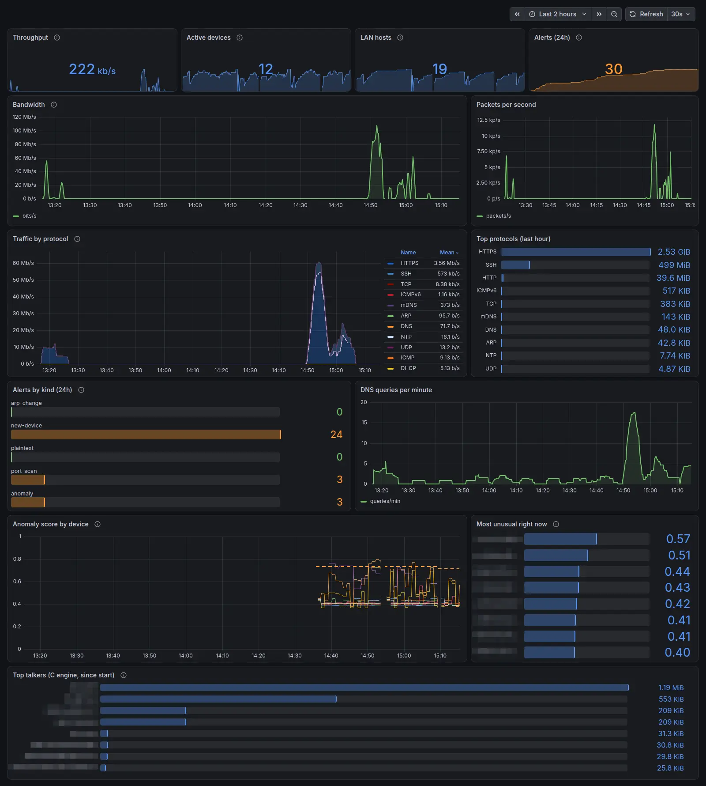
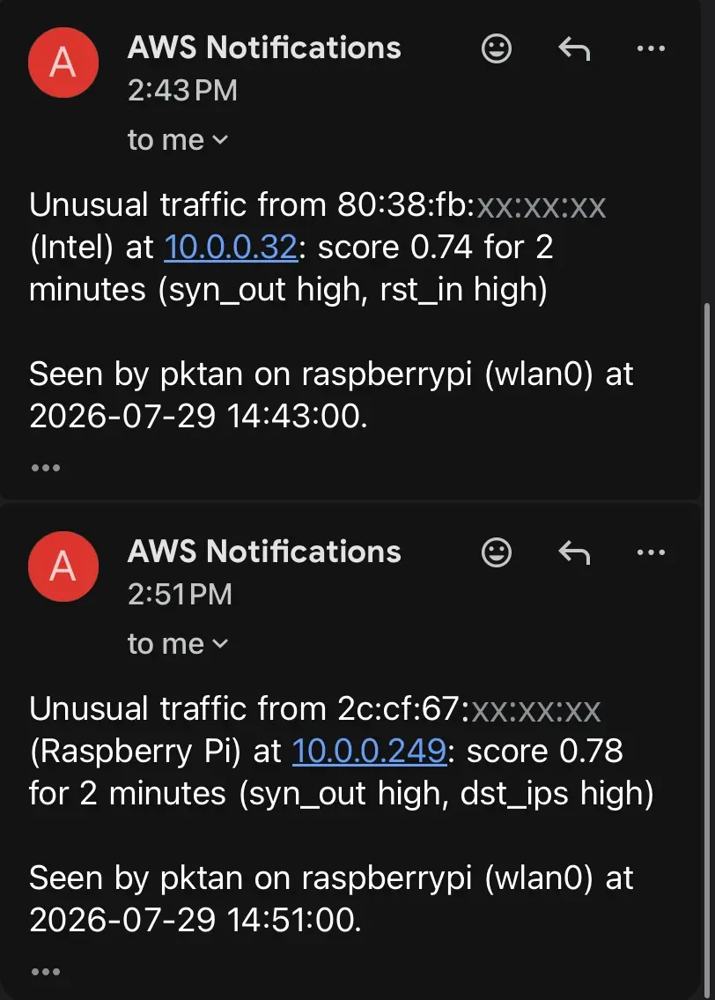
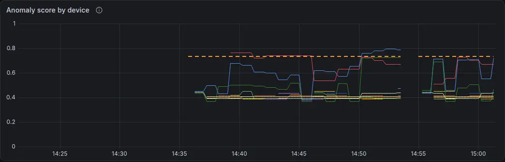

A packet analyzer that lives on my Raspberry Pi 5. A C engine reads traffic straight off the network card, every header is decoded by hand, and an Isolation Forest learns what normal looks like for each device. Prometheus and Grafana keep the history, and AWS emails me when something looks wrong.
View on GitHub ↗I had a Raspberry Pi 5 on my home network that wasn't doing much, and I kept wondering what all the devices in the house were actually saying to each other. Wireshark can answer that. But it's a desktop app, and it does all the interesting work for you. I wanted something that ran on the Pi all the time, that I could check from my phone, and that I understood down to the byte because I'd written the byte-level part myself.
I built it over the summer of 2026. It's called pktan, and you point it at a network interface. There are three ways to look at what it captures: one line per packet like tcpdump, a live dashboard in the terminal, or the same dashboard in a browser that any phone or laptop on the network can open.

Every packet takes the same path. A raw socket hands over the bytes, the decoder peels off one header at a time, a filter decides whether you care about it, and a stats object adds it to the running totals: bandwidth per second, protocol mix, top hosts, conversations, DNS lookups, and the devices on the LAN.
My favourite part is the names. IP headers don't contain any, so pktan picks them up wherever they leak out. A DNS answer says which address github.com lives at. The first packet of an HTTPS connection carries the site's name in plain text, in a field called SNI. Phones and PCs announce their own hostnames over mDNS, and DHCP requests often include one too. Put all of that together and a wall of IP addresses turns into github.com, carleton.ca and "the Windows PC in the other room".

It also raises an alert when something looks off: a new device joining, an IP address that suddenly belongs to a different MAC (the sign of ARP spoofing or an IP conflict), one machine trying 25 ports in ten seconds, or anyone opening an unencrypted Telnet or FTP session.
pip installAF_PACKET socketsstruct + ipaddresssniff and tophttp.server + Server-Sent Eventsunittesthmac and hashlib, so there's still no SDKWhy My Pi runs Ubuntu, which, like recent Debian, won't let you pip install into the system Python anymore. I wanted setup to be git clone and run, and I wanted it to keep working through OS updates. Python's standard library already has raw sockets, struct for reading binary data, an HTTP server and threads, which turned out to be everything I needed. The core still has no dependencies. The C engine only needs a compiler, and scikit-learn is only needed to train the model, not to run it.
The tradeoff Speed. Python decodes far slower than C, and filtering happens in Python after capture instead of in the kernel. That's what the C engine further down is for.
Why Scapy could have done most of this in an afternoon. But I was building this to learn what's inside a packet, and calling packet.show() wouldn't have taught me that. Each decoder is a small function. It reads one header with struct, fills in a few fields, and hands the rest of the bytes to the next one. The Ethernet header says whether IP comes next, the IP header names the transport protocol, and the port usually tells you what the application is.
The struggle Real traffic is messier than the specs. DNS shortens names by pointing back at bytes earlier in the message, so a broken packet can point at itself forever. IPv6 can hide the TCP header behind a chain of extension headers. Some frames just arrive cut off.
The fix Every decoder treats bad input as normal. If a header is too short, decoding stops at that layer, and the packet still shows up, marked as malformed. One test takes every sample packet and chops it off every 7 bytes, and nothing is allowed to throw. Another test feeds in a DNS name that points to itself.
The bug that surprised me most was mDNS. The dashboard showed plenty of mDNS traffic but never learned a single device name. It turns out a device announcing itself doesn't ask a question. It just answers, and the address records go in the "additional" section of the message, which my parser skipped. Once it read every section, an Android phone in the house showed up by name.
Why tcpdump and Wireshark capture through libpcap, and using it from Python means installing a C binding, which breaks the no-dependencies rule. Linux has its own option built in. You open one AF_PACKET socket and the kernel gives you a copy of every frame, including the ones the Pi sends. With each frame it also says which interface it came from and what kind of link that is.
The struggle That last detail mattered more than I expected. My Pi runs Tailscale, and frames on a tunnel interface have no Ethernet header. They start straight at the IP header, so reading them like Ethernet produces garbage. The Pi also runs a small Kubernetes cluster, which adds a bridge plus a virtual interface per container, so "the first interface" was never a sensible default.
The fix pktan checks the link type the kernel reports for each frame and decodes tunnel traffic as bare IP. The default interface is whichever one carries the default route, read from /proc/net/route. On my Pi, that's the Wi-Fi.

pktan top is the same dashboard, drawn with ANSI codes for when I'm already SSHed into the Pi.Why Python was fine for my home network, but I wanted to see how far the capture side could go, and I wanted to write the part closest to the kernel in the language the kernel speaks. pktcap is about 600 lines of C. Instead of one system call per packet, it asks the kernel for a TPACKET_V3 ring: 8 MiB of memory shared with the kernel, filled in 1 MiB blocks that the program reads directly. It parses Ethernet, VLAN tags, IPv4, IPv6, TCP and UDP itself. It keeps per-source counts in an open-addressing hash table with a fixed 8,192 slots, and when that's three-quarters full it throws out the least recently seen half, so even a scan of a whole /16 can't grow it. Once a second, a min-heap picks the top talkers.
The C side sends Python a fixed 76-byte summary for every packet. The raw bytes only go along when Python has to look deeper: DNS, DHCP, ARP, TLS hellos, or anything malformed. Everything else becomes a Packet without being parsed twice. A test compares both engines field by field on deliberately awkward packets (stacked VLAN tags, IPv6 extension headers, fragments, truncated frames), and another throws thousands of mangled packets at an AddressSanitizer build.
The struggle My first benchmark was humbling. The C parser was 210 times faster than Python, but the whole pipeline only got 1.2 times faster, because Python's per-packet bookkeeping was now the slow part. A profiler showed most of that time was spent turning the same IP-address strings back into numbers, over and over, just to ask whether each one was on my LAN.
The fix Caching those answers made both engines roughly twice as fast. Then I found that turning on S3 archiving quietly switched the C fast path off, because the service asked for every raw frame and then decoded them all in Python anyway. Now the raw bytes for saving and the "needs decoding" flag are separate. These are the honest numbers on the Pi, on a real capture replayed 100 times:
Why I wanted to check on the network from my phone without opening an SSH session. Data only goes one way here, from the Pi to the browser, once a second. Server-Sent Events do exactly that over plain HTTP. Python's http.server can send them, and the browser's EventSource reconnects on its own when the Pi restarts. WebSockets would have needed a library for a back channel I never use. The page is one HTML file with plain JavaScript and a chart drawn on a canvas. Nothing loads from a CDN, so it still works when the internet is down, which is exactly when you'd want to look at it.
The struggle The first time I ran it over SSH, 24 of the first 25 packets were SSH. The analyzer was mostly capturing its own output on its way to my laptop. The web dashboard had the same loop, because every update it sends is itself traffic.
The fix The web mode filters out its own port automatically. For the terminal views, the README tells you to add -f "not port 22".
Why The browser dashboard only knows the last two minutes, and it forgets everything when pktan restarts. I wanted to see what the network did overnight. So pktan serves a /metrics page in Prometheus's text format: packet and byte counters per protocol, DNS queries, alerts by kind, and how many devices are active. I wrote that format by hand too, since it's just lines of text. Prometheus pulls it every 15 seconds and stores 30 days of it, and Grafana draws the graphs.
The Pi has no Docker, but it already runs k3s, a small Kubernetes. So Prometheus and Grafana run there as two deployments, with Prometheus's data on a 2 GB volume and Grafana's data source and dashboard loaded from files. pktan itself stays outside Kubernetes, because it needs raw access to the Pi's network cards. Prometheus uses the host's network and scrapes 127.0.0.1:8080, so it keeps working when the router hands the Pi a new IP address.
The struggle My first dashboard lied in small ways. One alert showed up as "1.01", because Prometheus estimates how much a counter grew over a window instead of counting exactly. A chart of alerts per 10 minutes drew that single alert as a dozen bars, because every window it slid over counted it again. And Grafana's default colours turned a perfectly normal 486 kb/s red.
The fix Alert counts are rounded to whole numbers and shown as one total per kind over the last day. Colours only change when there's something worth looking at, and the protocol list is sorted by size with empty rows left out. I checked every new query against the live Prometheus before shipping it.

Why A dashboard only helps if I'm looking at it, so I wanted alerts to come to me. pktan publishes them to Amazon SNS, which emails me. It can also save its capture to a file, and every time that file fills up, it goes to S3 and is deleted from the Pi, so the SD card never fills. Old captures expire after 30 days. On a home network all of this costs a few cents a month at most. The Pi's AWS user can't do anything except send to that one topic and upload into that one folder.
I didn't want to give up "no dependencies" just to talk to AWS, so I wrote the request signing myself. AWS Signature Version 4 is a chain of HMAC-SHA256 steps over a carefully formatted copy of the request. Before touching real AWS, I tested it against the examples AWS publishes, and it matched them exactly. The first real call worked on the first try.
That's a real alert email, from a test where I knocked on 30 ports of the Pi from my laptop. Even the test taught me something. The first try produced nothing, because raspberrypi.local pointed at the Pi's Ethernet port while pktan was listening on its Wi-Fi.
The struggle The next emails were wrong. They said a new device had joined, but one was a Hikvision device I'd already seen in a capture an hour and a half earlier, and another was the Pi's own Ethernet port. pktan forgot the whole network every time it restarted, and I'd restarted it three times while testing. After a restart it only waited 90 seconds before calling a device new. Quiet devices like cameras and smart plugs can go minutes without saying anything, so each one got announced the moment it spoke. My tests had caught a similar problem earlier that day: a port scan that touched ports 21 and 23 also raised "unencrypted Telnet/FTP" alerts.
The fix pktan now keeps the list of every device it has ever seen in a small file in its state folder, so a reboot doesn't re-announce anything. The Pi's own network cards count as known from the start. On a first run with no saved list, it learns for 10 minutes before it alerts. The Telnet and FTP alert now waits for the server to accept the connection, so a scan's knocking doesn't count.
Why Fixed rules like "25 ports in 10 seconds is a scan" are easy to write and easy to fool. They also don't know my network. In my held-out data, the one time the fixed limits went off, it was a device with a randomised MAC address, almost certainly a phone, doing its normal mDNS chatter: 37 lookups a minute against a limit of 30. So every minute, pktan sums up each device's traffic in ten numbers: packets and bytes each way, packet size, how many hosts and ports it reached, SYNs sent, resets received, DNS lookups and ARP requests. An Isolation Forest learns what those minutes normally look like. It works by building random trees that keep splitting the data, and anything that gets isolated in very few splits is unusual.
Training uses scikit-learn. The trained trees are then exported to JSON, and the service scores each device-minute with about 35 lines of pure Python, so the always-on process never loads numpy. A test checks those scores match scikit-learn's to within 1e-9. A device has to score above the threshold two minutes in a row before it raises an alert, and the alert says which numbers were furthest from normal.
The struggle Mostly honesty about the data. I trained on about two hours of today's traffic, which is far too little to know what nights, weekends or software updates look like. My own testing kept leaking into it, too: one capture included a port scan I'd run earlier, from both the laptop's side and the Pi's replies, so I had to drop those minutes before training. Then I tested it with three attacks from my laptop and recorded them separately, so attack traffic could never end up in training:
The slow scan is the case that matters. It stays under every fixed limit, and the forest caught it every minute. It missed the bulk upload by a hair, and the byte limit caught that one, so pktan keeps both.
The fix The most convincing result wasn't planned. At 14:51 the model flagged the Pi itself. I checked, and it was right. My S3 archiver had started capturing its own uploads: every 50 MB file it sent produced 50 MB of new captured traffic, which filled the next file, which got uploaded too, one every three seconds. pktan now remembers the network ports of its own AWS connections and leaves those packets out of what it saves and what it scores. I tested the fix by forcing a real 50 MB rotation. One file went up and the next capture stayed small.


Anything that starts on boot and never stops can't be allowed to grow forever. Every table pktan keeps (hosts, devices, conversations, names) has a ceiling, and when one fills up, the entries seen least recently are dropped. Logs are fixed-size queues. Saving to a pcap file has a size limit and rotates into a single backup, so it never uses more than twice the limit on disk. A test pushes 10,000 different hosts through and checks that the tables stay under 4,000.
The included systemd service doesn't run as root either. Capturing only needs the CAP_NET_RAW capability, so the service runs as a throwaway user that systemd creates for it, with just the two network capabilities, a read-only filesystem except for its own state folder, and a 200 MB memory cap. A packet parser reads bytes from anyone on the network, and it shouldn't run with full root powers while it does that.
The last fixes came from running it on my actual network instead of in tests. Most devices showed up as a bare MAC address, my router included, because I'd started with a small hand-written table of manufacturer prefixes. The full IEEE list is often already installed: the Pi had nmap's copy, and my laptop had Debian's. pktan now reads whichever one it finds. The "new device" alert also fired for every quiet device that happened to speak in the first minute, so it now waits 90 seconds before treating anything as new.
The biggest lesson had nothing to do with code. Where a packet analyzer sits matters more than how well it's written. On Wi-Fi, my Pi only sees its own traffic plus whatever gets broadcast to everyone. Promiscuous mode doesn't change that, because the access point only sends each device the frames meant for it. To see everything, the Pi has to be the router, sit inline between the router and a device, or plug into a switch port that mirrors all the traffic. I knew in theory that switches forward frames by MAC address. Seeing it in my own capture is what made it stick.
I also learned how much of the network is in plain text, even with HTTPS everywhere. Encryption hides what you send, but not who you're talking to. DNS lookups, the site name at the start of every TLS connection, and the hostnames that phones announce all go by readable. A Pi on a shelf can build a decent picture of a house from that alone.
Measuring beat guessing every time. "C is 210 times faster" was true and nearly useless. The number that mattered was the whole pipeline, and a profiler showed me where the time actually went. The same goes for the model: one table of what it caught and missed says more than any accuracy figure I could have quoted.
Networks are stranger than diagrams. My Pi has Wi-Fi and Ethernet on the same subnet, and Linux will happily answer for the Wi-Fi address on the Ethernet port. So my first "bulk upload" test arrived on an interface pktan wasn't watching, and I only noticed because the capture was 82 MB of something else.
Alerts taught me that a wrong alarm is worse than no alarm. Five false "new device" emails in five minutes, and I'd have set up a filter for them and then missed the real one. Getting the logic right mattered more than getting the email delivered, and only real email in a real inbox showed me that.
Building the test packets byte by byte taught me the formats as well as parsing them did. Still, every test passed before I found the mDNS and vendor bugs. Those only showed up when I compared what the dashboard said with what I knew was in my house.